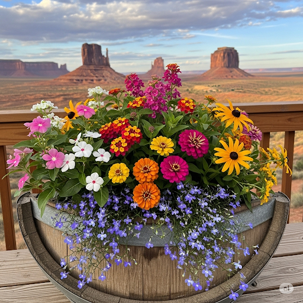
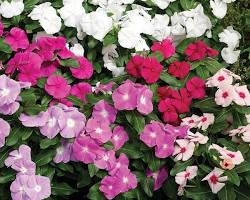
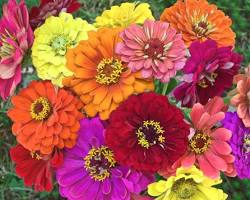
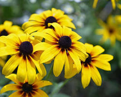
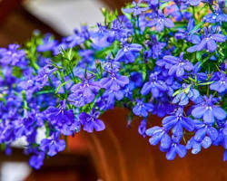

Your Flower Arrangement with a View
Plant Varieties in this Arrangement
Here are the five plant varieties included in the design, with a description and an image of each.
1. Vincas 🌸
An easy-to-grow annual with glossy green leaves and delicate, five-petaled flowers. They come in a variety of colors and have a mounding or trailing habit, making them great for filling out a container.
2. Lantana ☀️
A sun-loving plant known for its clusters of multi-colored, butterfly-attracting flowers. It has a slightly sprawling habit and is very tolerant of heat and drought.

3. Zinnia Mix 🎨
A popular annual that provides a continuous show of bold, colorful, and long-lasting blooms. A mix will provide a variety of shapes and sizes from single to double petals.
4. Black-Eyed Susan 🌻
A cheerful, daisy-like flower with bright yellow petals and a distinctive dark brown center. These plants add height and a classic garden look to any arrangement.
5. Trailing Lobelia 💜
An excellent "spiller" plant with a delicate, cascading habit. Its small, vibrant blue or purple flowers will gracefully trail over the edge of a container, softening the look.
